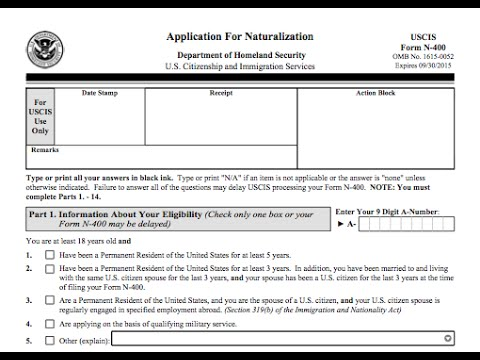

☰
WHY DO YOU NEED TO BECOME A CITIZEN?
You become able to vote for political representatives nationally, and where you live
You become eligible for federal employment and benefits
You can sponsor your families for green cards
You have the ability to travel for longer time periods
WHAT IS REQUIRED FOR CITIZENSHIP?
Be at least 18 years old at the time of filing Form N-400, Application for Naturalization.
Be a permanent resident (have a “Green Card”) for at least 5 years.
Show that you have lived for at least 3 months in the state or USCIS district where you apply.
Demonstrate continuous residence in the United States for at least 5 years immediately preceding the date of filing Form N-400.
Show that you have been physically present in the United States for at least 30 months out of the 5 years immediately preceding the date of filing Form N-400.
Be able to read, write, and speak basic English.
Have a basic understanding of U.S. history and government (civics).
Be a person of good moral character.
Demonstrate an attachment to the principles and ideals of the U.S. Constitution.
WHAT IS THE PROCESS LIKE?

Determine your eligibility to become a U.S. citizen.
Prepare Form N-400, Application for Naturalization.
Submit Form N-400, Application for Naturalization.
Go to the biometrics (fingerprinting) appointment, if applicable.
Complete the interview.
Receive a decision from USCIS on your Form N-400, Application for Naturalization.
Receive a notice to take the Oath of Allegiance.
Take the Oath of Allegiance to the United States.
Understand your rights and responsibilities as a U.S. citizen.
IN GENERAL...
Naturalization interview
Speaking Test
Reading Test
Writing Test
Civics Test
Click here for a practice test! And here for a study guide!
I.C.E
ICE stands for Immigration and Customs Enforcement, an agency within the Department of Homeland Security. ICE was created in 2003.
I is a component of the U.S. Department of Homeland Security (DHS), primarily responsible for enforcing federal immigration and customs laws.
Its powers include investigating, apprehending, arresting, detaining, and removing aliens(undocumented immigrants) within the United States.
What to do when I.C.E comes
Don’t open the door: Instead, ask the agents from inside if they have a warrant. If they say yes, ask them to slip it under the door. You are not obligated to answer any questions.
Ask for a lawyer:: You have a right to an attorney. If agents attempt to enter your house forcefully, tell them you “do not authorize entry” and ask to speak with a lawyer.
Remain silent and protect your information: If you are being detained or arrested, exercise your right to remain silent and do not sign anything. Do not give your personal information or provide fingerprints. Do not provide your identification card or your papers.
Document everything:: You have the right to take videos and pictures. Take notes of the officers’ license plates and badge numbers. Then, report the raid by calling the United We Dream hotline.